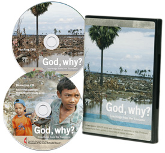

God, Why?
Teachings from the Tsunamis
A two-session study DVD/CD and collection of resources to help Christians understand God’s activity in the midst of natural disasters.
Feelings of grief and a loss of a spiritual compass are expected when natural disasters strike. We ask questions that we all struggle to answer: Why would God allow such a terrible thing? Is this a sign of God’s wrath?
This important two-session resource, with accompanying study guide, helps people of faith through a myriad of emotions. Influential Christian leaders provide light for the journey to understand God’s activity when natural disasters occur. Using the South Asia tsunamis as an anchor, practical—yet spiritual—answers are provided to help us address our confusion.
Additional resources:
- A powerful music PowerPoint presentation filled with images from south Asia.
- Short video stories filled with hope amid tragedy.
- 80 free-to-use images of the loss in south Asia.
- A collection of feature news stories for use in your church.
- Bulletin inserts to help raise awareness and funds for United Methodist relief efforts.
- Graphics for church Web sites.
- And more!
Product includes:
- 1 DVD
- 1 CD of additional materials
- Ready-to-print study guide on CD
PURCHASE YOUR COPY OF
God, Why?: Teachings from the Tsunami